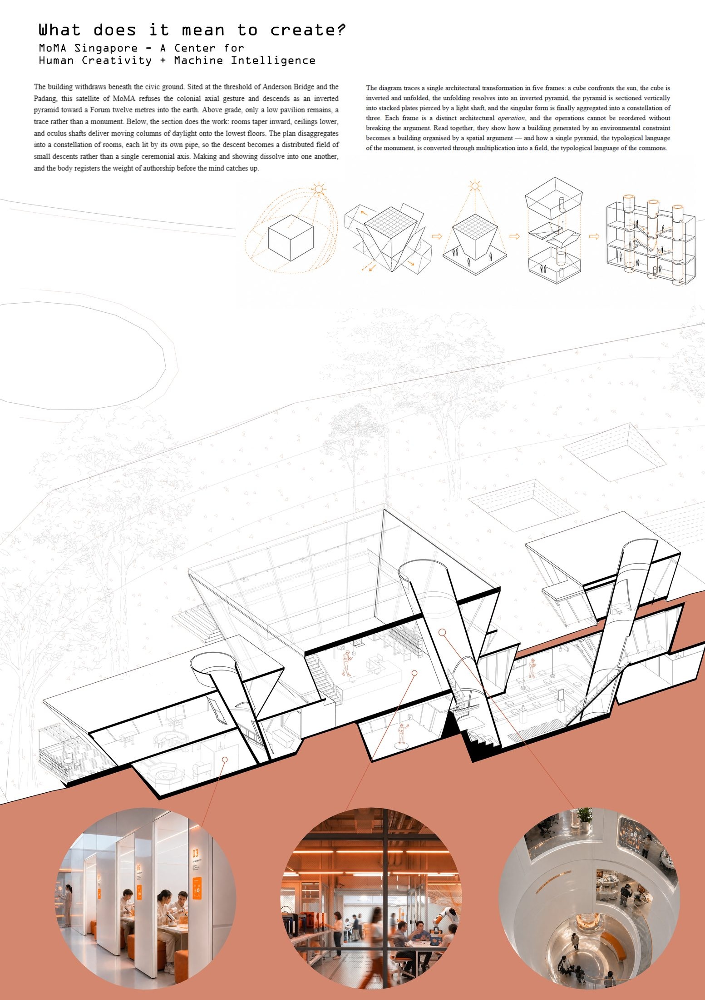
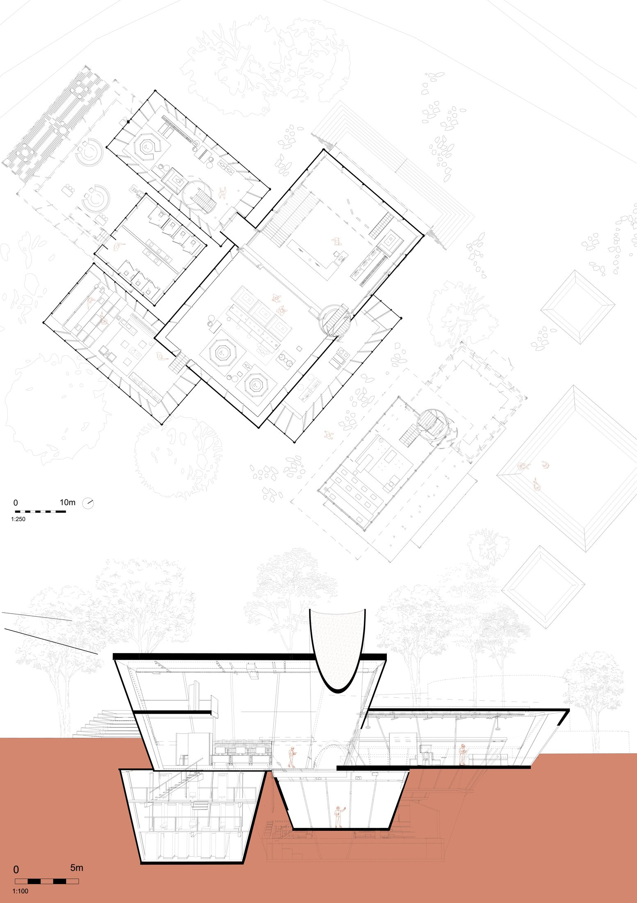
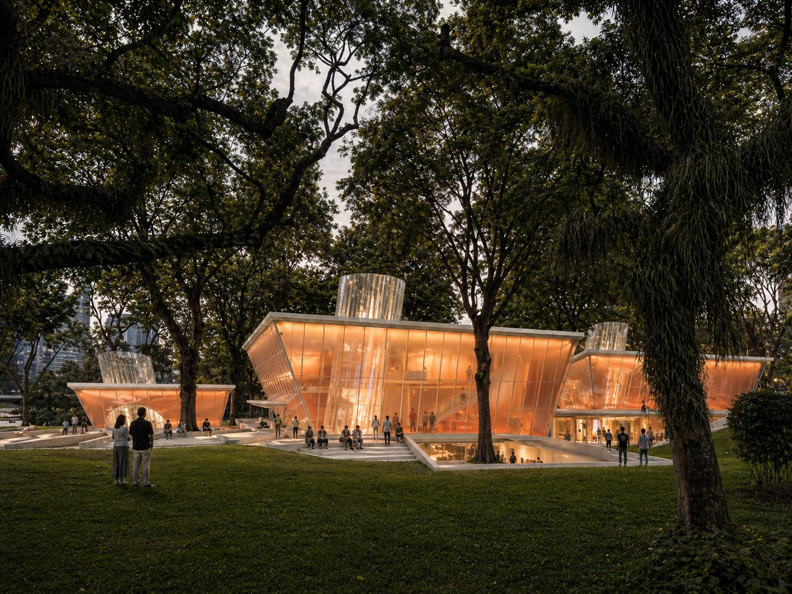
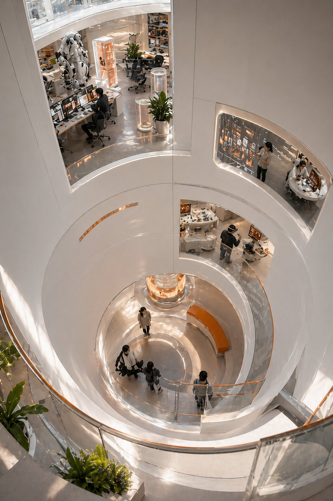
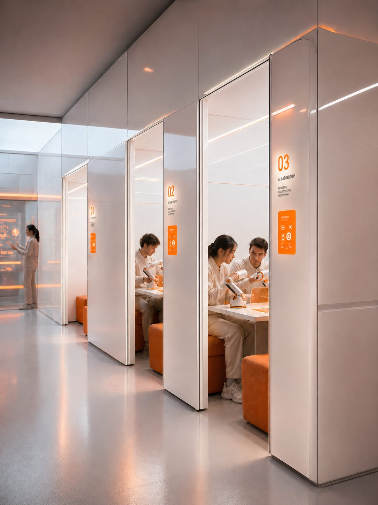
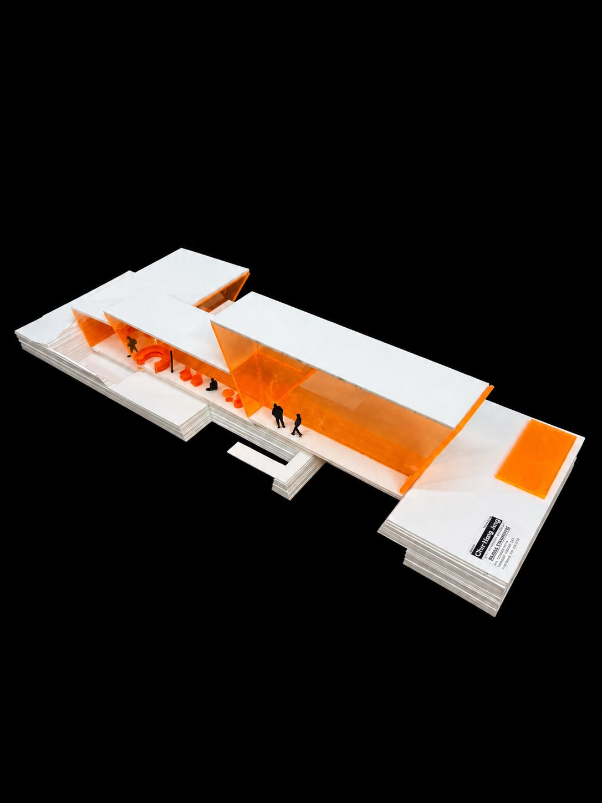
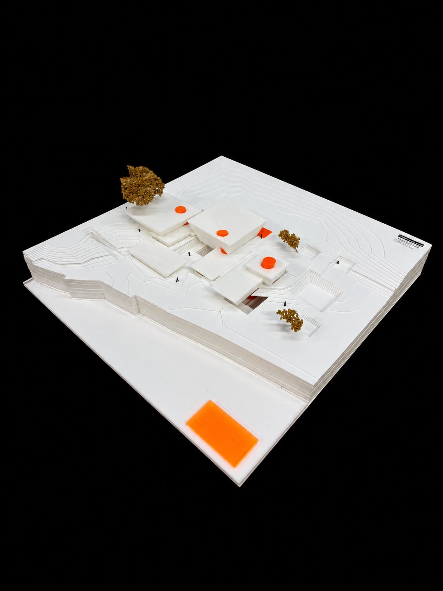

MoMA SINGAPORE

A Center for Human Creativity + Machine Intelligence at the Padang — an inverted pyramid that withdraws beneath the civic ground. Visitors don't view finished work; they descend to make it, in a "vivarium for creative systems" where machines, handlers and visitors produce art together. A name-registry wall meets you at the threshold; the descent edge has no handrail — the absence is the argument.
GLANCE → LINGER → DEEP DIVE · oculus over the forum · authorship = designing the conditions under which the work can appear







"IF A MACHINE CAN DREAM ABOUT TWO CENTURIES OF HUMAN ART — AND THREE MILLION PEOPLE STAND THERE FOR 38 MINUTES — WHAT EXACTLY IS LEFT FOR THE HUMAN ARTIST TO DO?" · the process behind this project is written up in THE DREAM ENGINE →